用公开资料（公司年报、Amazon 与零售页面、评论、渠道结构、KOL/UGC 内容）对三个中国消费科技品牌的欧美市场路径做对比， 自建 7 张表的分析底稿，最后收敛成 12 页结论。研究的是「一个品类的产品定位和卖点，是怎么被验证、放大并卖出去的」—— 这件事和产品岗每天要回答的问题是同一件事。
同类产品的目标用户、价格带、功能卖点、页面信息与评论痛点逐条拆解，形成可复用的竞品矩阵。
对应岗位职责：市场数据分析、竞品分析把三个品牌的增长阶段抽象成四阶段模型，判断一个新产品/新品类应该从哪个入口验证需求。
对应岗位职责：行业趋势、机会洞察与建议Amazon、独立站、线下零售、KOL/UGC 各自承担的角色不同，内容不是营销附属品，而是产品价值的一部分。
适用于手机配件类低单价、快迭代、视觉驱动品类点击任意一页可查看大图；完整 PDF 见页面顶部按钮。
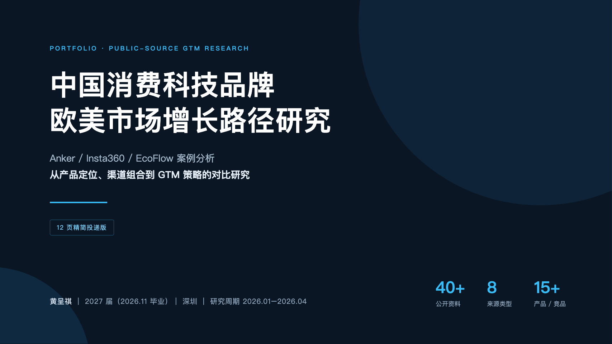
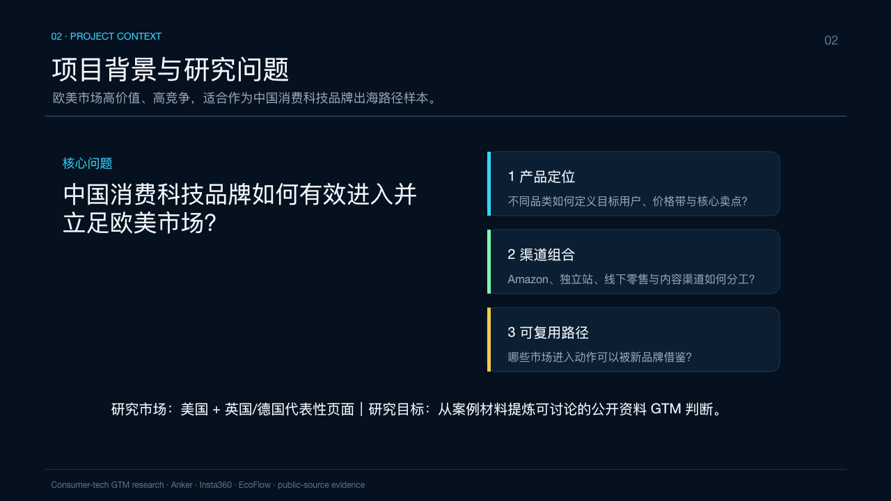
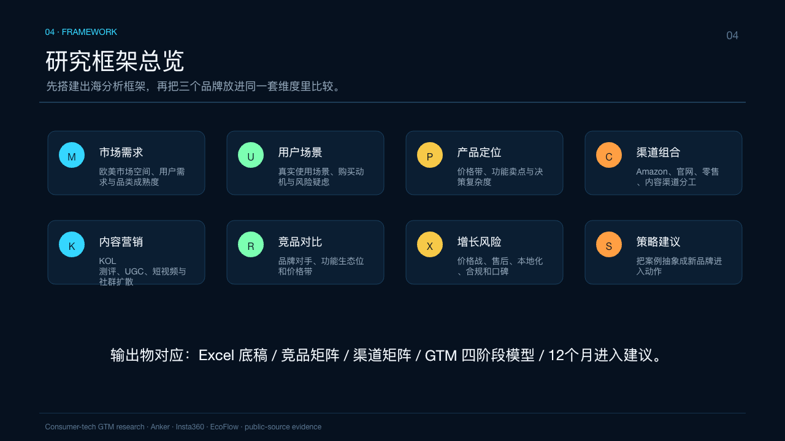
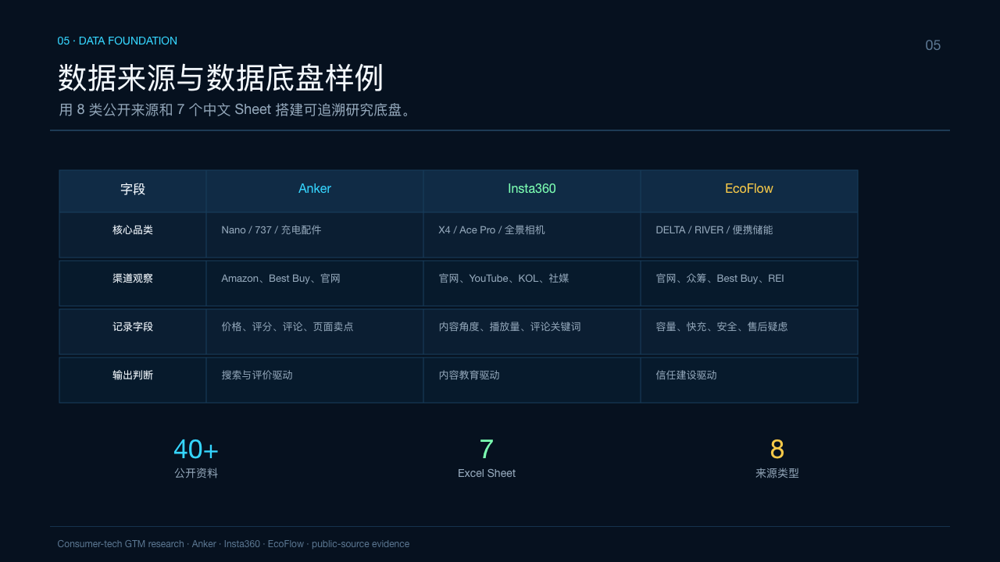
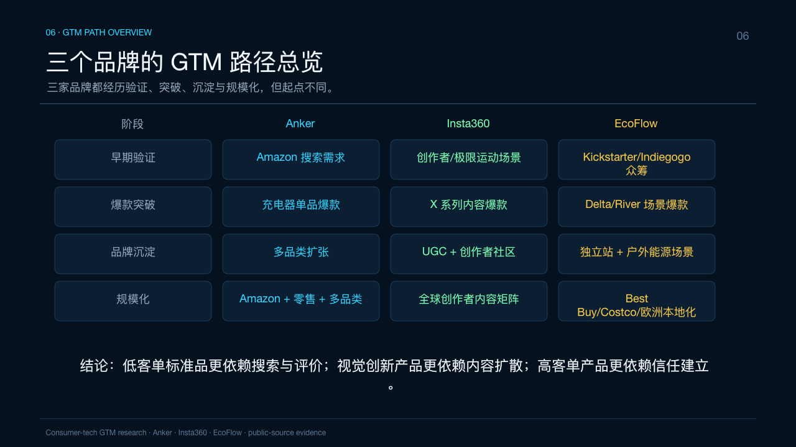
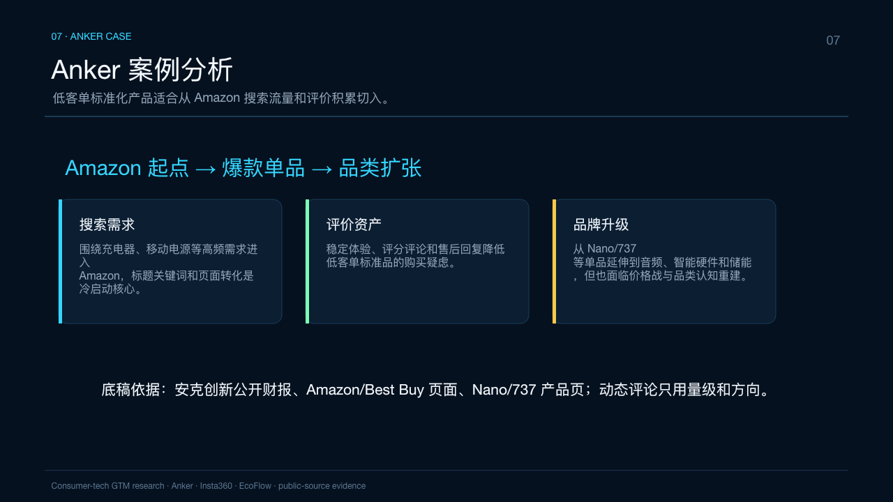
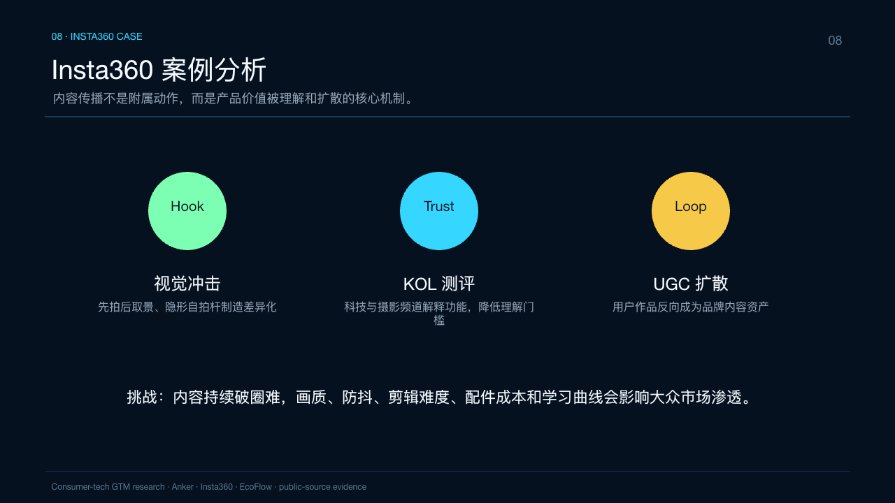
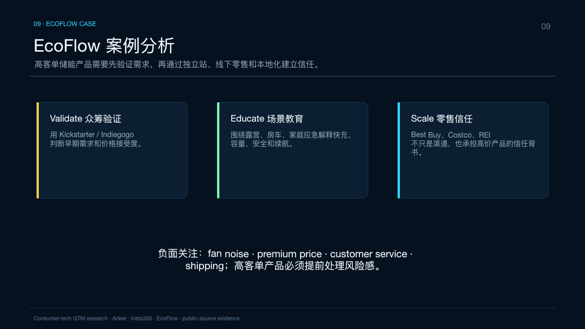
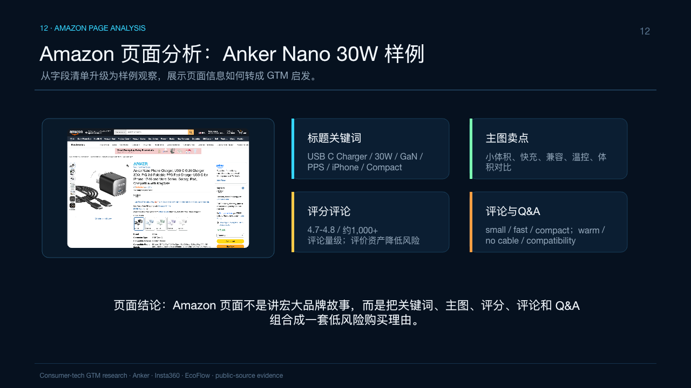
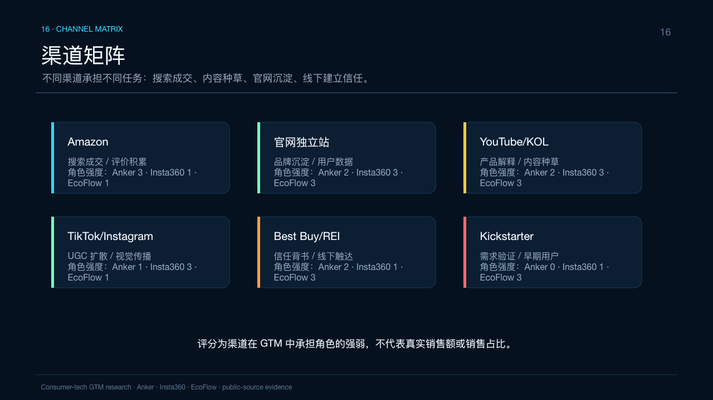
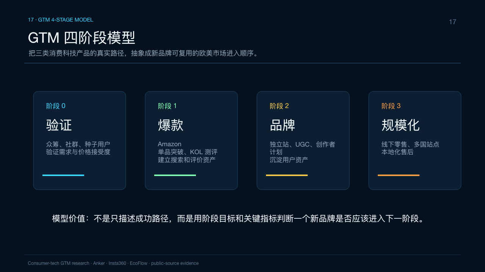
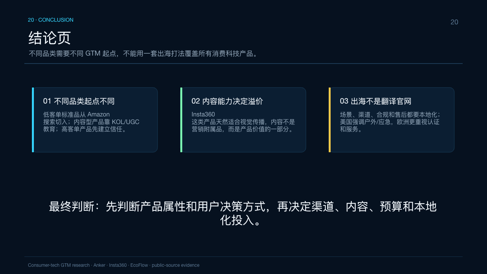